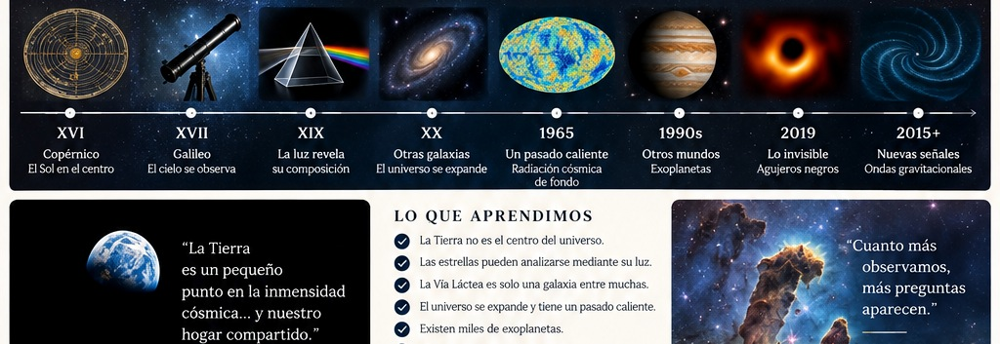
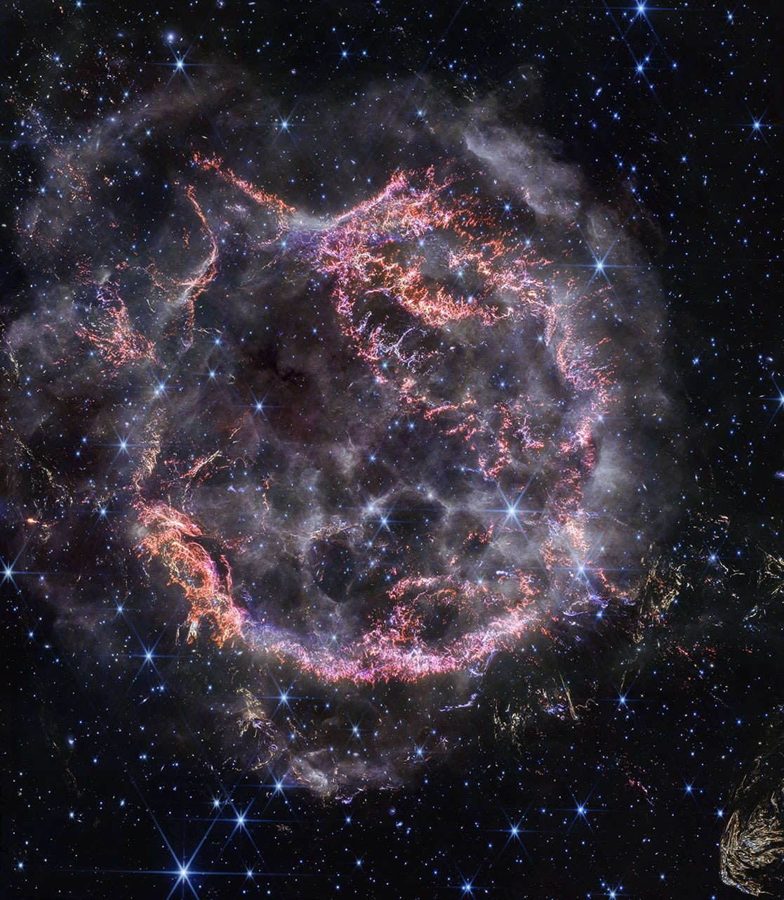
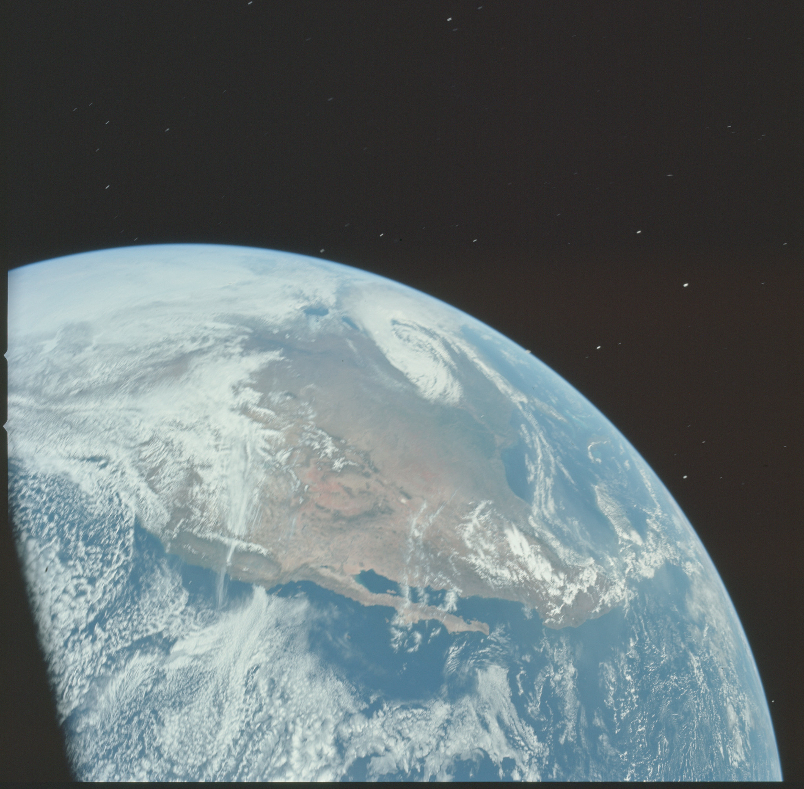
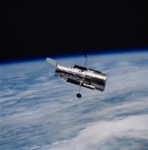
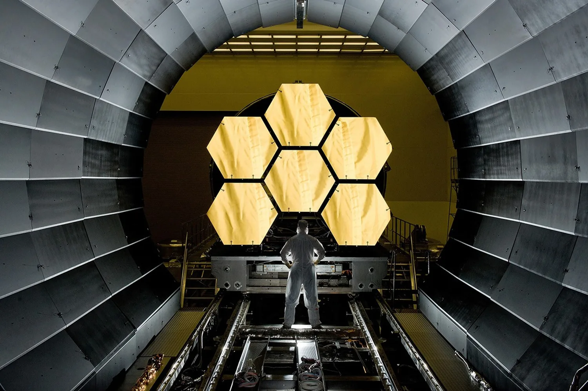

La expansión desplaza la luz al infrarrojo
Webb ayuda a estudiar objetos formados muy pronto en la historia cósmica, cuando el universo era todavía joven.
PENSAMIENTO CRÍTICO · HITOS MÁS IMPORTANTES
Diez momentos condensan la transformación intelectual más profunda de la astronomía: cómo cambian los modelos, qué cuenta como evidencia y de qué manera nuestra visión del universo termina cambiando también nuestra visión de nosotros mismos.
1543 → ACTUALIDAD
La selección no resume solamente descubrimientos: resume giros intelectuales. Cada hito muestra una cadena parecida: una pregunta, una herramienta, una medición, un modelo que deja de encajar y una nueva manera de pensar el cosmos.
1543–1610 · HITO 01
CAMBIO DE CENTRO
Copérnico reorganizó el sistema; Galileo hizo visible por qué el viejo cielo perfecto ya no bastaba.
Durante siglos, la experiencia cotidiana parecía confirmar que la Tierra permanecía inmóvil mientras todo lo demás giraba a su alrededor. El modelo geocéntrico explicaba bastantes observaciones, pero lo hacía a costa de una arquitectura cada vez más compleja.
El heliocentrismo de Copérnico simplificó la organización general del sistema, aunque todavía no constituía una demostración definitiva. El gran salto vino con el telescopio: las fases completas de Venus y las lunas de Júpiter mostraron que la Tierra ya no podía seguir ocupando el lugar central obligatorio del cosmos.
La apariencia cotidiana hacía razonable el geocentrismo, pero el modelo antiguo necesitaba cada vez más ajustes para seguir funcionando.
Una nueva herramienta añadió observaciones imposibles a simple vista. La discusión dejó de ser puramente filosófica y pasó a depender mucho más de evidencia observable.
Una vez desplazada la Tierra del centro, la pregunta siguiente ya no fue “dónde estamos”, sino “qué leyes gobiernan realmente el movimiento del cielo”.
→1609–1687 · HITO 02
LEYES UNIVERSALES
El movimiento planetario dejó de parecer una danza perfecta y pasó a entenderse como un fenómeno físico gobernado por reglas generales.
Kepler utilizó las mediciones de Tycho Brahe y aceptó una conclusión incómoda para la tradición: Marte no seguía un círculo, sino una elipse. Ese gesto es un ejemplo clásico de pensamiento crítico: abandonar una idea elegante cuando los datos no la sostienen.
Newton unificó después el problema al mostrar que la misma gravitación explica la caída de los cuerpos, la órbita de la Luna y el movimiento de los planetas. El cielo dejó de necesitar reglas separadas.

Sabíamos mejor qué se veía en el cielo, pero todavía faltaba una explicación física capaz de describir y justificar esos movimientos.
Kepler aceptó la evidencia por encima de la estética del círculo perfecto, y Newton mostró que detrás de las órbitas existe una ley general.
Si el cielo obedece leyes, entonces la siguiente revolución dependerá de aprender a extraer más información de la luz y del propio espacio-tiempo.
→
1905–1919 · HITO 03
NUEVO ESCENARIO
Einstein no solo añadió una teoría más: cambió el propio escenario en el que imaginábamos los fenómenos físicos.
La relatividad especial mostró que espacio y tiempo no son absolutos por separado. La relatividad general fue aún más profunda: la gravedad deja de ser una fuerza a distancia en un espacio fijo y pasa a entenderse como curvatura del espacio-tiempo.
El eclipse de 1919 se volvió histórico porque ofreció una prueba observable: la luz de las estrellas aparecía desviada al pasar cerca del Sol. La idea crucial aquí es metodológica: una buena teoría no solo explica lo conocido, también se arriesga a fallar en una predicción concreta.
La física clásica funcionaba extraordinariamente bien, pero dejaba preguntas conceptuales y pequeñas discrepancias sin resolver.
Einstein amplió el marco y el eclipse convirtió una idea abstracta en una predicción sometida a verificación observacional.
Cuando el marco físico cambia, también cambian las preguntas posibles. La siguiente gran sorpresa no vendrá de la teoría sola, sino de medir mejor la escala del universo.
→1920–1924 · HITO 04
CAMBIO DE ESCALA
El problema ya no era solo entender nuestro sistema planetario, sino averiguar si la galaxia entera agotaba o no la realidad cósmica.

El Gran Debate de 1920 enfrentó dos interpretaciones: una Vía Láctea inmensa que contendría las nebulosas espirales, o un universo formado por múltiples “universos isla”. El asunto dependía de una pregunta crítica: ¿cómo medir distancias realmente grandes?
Cuando Hubble identificó Cefeidas en Andrómeda y aplicó la relación período-luminosidad, la conclusión cualitativa fue contundente: Andrómeda estaba demasiado lejos para pertenecer a la Vía Láctea. La galaxia dejó de ser “todo”.
Sin una forma confiable de medir distancias, la discusión sobre las nebulosas espirales seguía siendo ambigua.
Las Cefeidas convirtieron una controversia conceptual en un problema medible. La evidencia alteró la escala entera del cosmos conocido.
Si el universo es mucho mayor de lo pensado, la gran pregunta siguiente es todavía más ambiciosa: ¿ese universo ha existido siempre así o tiene una historia?
→1930–1965 · HITO 05
05COSMOLOGÍA FÍSICA
La expansión del universo transformó una cuestión filosófica en un problema físico que podía compararse con observaciones concretas.

“Big Bang” no significa una explosión en un punto del espacio vacío, sino un universo evolutivo que fue más denso y más caliente.
La expansión sugería que, al retroceder en el tiempo, la materia debía encontrarse en estados cada vez más comprimidos y energéticos. Esa idea competía con el modelo de estado estacionario, que aceptaba la expansión pero defendía un universo globalmente invariable.
La radiación cósmica de fondo inclinó la balanza porque ofreció una huella concreta de un pasado caliente. Con este hito, el universo dejó de ser solo un escenario inmenso: pasó a tener historia física propia.
La idea de un universo eterno o inmutable podía sostenerse mientras faltara una huella física capaz de discriminar entre modelos.
La expansión y la radiación cósmica de fondo convirtieron el pasado del universo en un objeto de estudio científico.
Si el universo tiene una historia, también puede contener regiones extremas y entidades invisibles que sólo podemos inferir por sus efectos.
→1960–2019 · HITO 06
LO INVISIBLE
Durante décadas fueron una consecuencia extraña de la relatividad. Después se convirtieron en una de las mejores lecciones sobre cómo funciona la evidencia indirecta.
Un agujero negro no se “ve” como una superficie sólida: se infiere por su interacción con el entorno. Rayos X, dinámica orbital, ondas gravitacionales e imágenes de radio aportan piezas complementarias del mismo rompecabezas.
Este hito es fundamental para el pensamiento crítico porque enseña que la evidencia indirecta no es evidencia débil. Al contrario: cuando métodos independientes apuntan hacia la misma explicación, la conclusión gana enorme solidez.

Las ecuaciones permitían estos objetos, pero durante mucho tiempo faltaba saber si la naturaleza realmente los producía.
La combinación de rayos X, órbitas estelares, ondas gravitacionales e imágenes del horizonte convirtió una hipótesis extrema en una realidad astronómica robusta.
Mientras aprendíamos a aceptar entidades invisibles por sus efectos, otra revolución más humana cambiaba nuestra propia autoimagen al mirar la Tierra desde fuera.
→
1968–1972 · HITO 07
IDENTIDAD PLANETARIA
La astronomía y la exploración espacial no solo amplían datos: a veces cambian la perspectiva desde la que nos pensamos a nosotros mismos.
Earthrise no descubrió una ley física nueva, pero sí produjo una imagen decisiva: la Tierra apareció como un objeto finito, compartido y frágil suspendido en la oscuridad del espacio. La humanidad se vio, literalmente, desde fuera.
Ese cambio visual fortaleció además una idea intelectual: estudiar la Tierra como un planeta entre otros, comparando atmósferas, superficies y procesos con los de la Luna, Marte o Venus.
La humanidad sabía que la Tierra era un planeta, pero nunca la había contemplado completa desde la vecindad de otro mundo.
La imagen cambió la escala emocional e intelectual de nuestra perspectiva: la Tierra dejó de ser simplemente “el suelo” y pasó a ser un objeto planetario observado desde fuera.
Una vez asumida una identidad más planetaria, la siguiente gran sorpresa fue descubrir que el Sistema Solar tampoco agotaba la diversidad de mundos posibles.
→1992–1995 · HITO 08
OTROS MUNDOS
El Sistema Solar dejó de ser la única arquitectura planetaria conocida y, con ello, se multiplicaron las posibilidades para pensar otros mundos.
Los primeros exoplanetas no se vieron directamente como pequeños discos junto a sus estrellas. Se detectaron por sus efectos: oscilaciones de velocidad radial, variaciones en el tiempo de pulsos o disminuciones periódicas de brillo durante un tránsito.
La gran lección crítica fue doble. Primero, que muchas veces conocemos algo por su huella y no por una imagen directa. Segundo, que los primeros objetos detectados no siempre son los más comunes: suelen ser los más fáciles de observar, como los gigantes cercanos a sus estrellas.
La enorme diferencia de brillo entre una estrella y un planeta hace muy difícil observar ambos de forma directa.
Las técnicas indirectas permitieron inferir mundos lejanos y revelaron sistemas muy distintos del que habíamos tomado como referencia natural.
Si el universo ya podía hablar de otros mundos, pronto también encontraría una forma nueva de “hablar” sin usar luz: mediante ondas gravitacionales.
→2015–2017 · HITO 09
NUEVA EVIDENCIA
La astronomía dejó de depender exclusivamente de la luz y abrió un canal completamente nuevo para estudiar fenómenos extremos.
LIGO detectó minúsculas deformaciones del espacio-tiempo producidas por la fusión de objetos compactos. La señal tipo chirp permitió reconstruir la masa y la dinámica de sistemas invisibles para los telescopios tradicionales.
Con GW170817 la historia fue todavía más rica: el mismo evento se observó mediante ondas gravitacionales y radiación electromagnética. Ese cruce inauguró la astronomía multimensajero.

Muchos procesos extremos apenas podían inferirse indirectamente a partir de la luz emitida por su entorno.
Las ondas gravitacionales permitieron registrar directamente la dinámica de fusiones cósmicas y, al combinarse con otras observaciones, ampliaron el tipo de evidencia disponible.
Si pudimos abrir un mensajero nuevo, el paso siguiente fue también abrir una ventana nueva: observar en infrarrojo el universo temprano y mundos que antes estaban ocultos.
→2021–ACTUALIDAD · HITO 10
INFRARROJO Y FUTURO
La etapa más reciente no cierra la historia: la vuelve más exigente. Webb amplía el acceso a galaxias tempranas, regiones cubiertas por polvo y atmósferas de exoplanetas, pero al mismo tiempo multiplica las preguntas abiertas.

La expansión del universo estira la luz de galaxias muy antiguas hacia longitudes de onda infrarrojas. Observar en ese rango permite estudiar épocas que los telescopios ópticos no podían explorar con la misma potencia. Además, el infrarrojo atraviesa mejor ciertas nubes de polvo y revela regiones de formación estelar antes ocultas.
Webb también recuerda otra lección central del pensamiento crítico: una imagen hermosa no agota la ciencia. Para medir distancias, identificar moléculas o comparar hipótesis, la espectroscopia suele ser decisiva. En exoplanetas, por ejemplo, detectar una molécula no equivale a detectar vida: la interpretación depende del contexto físico y químico completo.
Por eso este hito funciona tan bien como cierre provisional. Webb no entrega un final; entrega una versión más sofisticada del mismo proceso que empezó con Galileo: mejores instrumentos, evidencia más rica y preguntas cada vez más finas.
Webb ayuda a estudiar objetos formados muy pronto en la historia cósmica, cuando el universo era todavía joven.
Las longitudes de onda infrarrojas atraviesan mejor ciertas nubes y revelan regiones antes escondidas tras el polvo interestelar.
Un espectro puede mostrar moléculas o corrimientos al rojo, pero entender su significado exige contexto y comparación rigurosa de hipótesis.
El siguiente paso natural ya no es un nuevo resumen, sino la historia completa: los 21 capítulos donde cada transición se desarrolla con más detalle, más ejemplos y más conexiones.
→¿QUIERES VER EL RECORRIDO COMPLETO?
La versión extensa desarrolla cada cambio con más profundidad, añade contexto histórico y científico, y muestra mejor cómo se conectan observación, teoría, instrumentos y transformación de la concepción humana del universo. Si este resumen te orientó, el siguiente paso natural es explorar la narración completa.